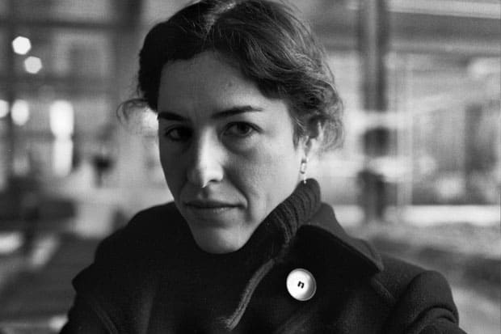

Alberto Chimal:Nacido en Toluca, Estado de México, el escritor Alberto Chimal es uno de los más destacados representantes de la literatura de la imaginación en México. Su obra se caracteriza por transformar la vida cotidiana en situaciones oscuras y extraordinarias, además de mostrar un profundo conocimiento de los géneros fantásticos.
Guadalupe Nettel: “Me gusta enfocar lo que la gente cree anormal, lo que esconde, lo que piensa que son defectos”, dijo Nettel al diario El País cuando ganó el premio Herralde de Novela, de Editorial Anagrama, en 2015 por Después del invierno. Su percepción y su narrativa hacen de ella una de las figuras claves, no sólo de la literatura mexicana, sino del paisaje literario iberoamericano. Ha publicado novelas, ensayos y colecciones de cuentos.
Benardo Esquinca:La ficción de lo extraño encuentra en Bernardo Esquinca (Guadalajara, 1972) a uno de sus principales exponentes mexicanos. Como autor y antologador, Esquinca se ha esforzado en renovar el aprecio de los lectores por las historias oscuras que habitan su cotidianidad. Destacan los dos volúmenes de la antología Ciudad fantasma. Relato fantástico de la Ciudad de México (XIX-XXI) –con el escritor Vicente Quirarte–, además de sus libros de cuentos Demonia y Mar Negro. Su obsesión por el Centro Histórico de la Ciudad de México y la novela policiaca lo han llevado a escribir la “saga Casasola”, cuyo título más reciente es Toda la sangre.
Valeria Luiselli: Los tres libros publicados por Valeria Luiselli –Papeles falsos (2010), Los ingrávidos (2011), y La historia de mis dientes (2013)– han sido elogiados por la crítica literaria internacional. Los viajes de la escritora, quien ahora reside en Nueva York, han enriquecido y profundizado su narrativa. Su irrepetible perspectiva la ha convertido en una de las voces más importantes de la literatura mexicana de los últimos años.
ignacio Padilla: El recientemente fallecido Ignacio Padilla fue uno de los autores más activos de la Generación del Crack. Entre sus publicaciones destacan Trenes de humo al bajoalfombra (1992), Últimos trenes (1994) y Subterráneos (1989). Padilla era también un investigador y conocedor de la obra de Miguel de Cervantes, a la cual dedicó Cervantes y compañía, uno de sus últimos textos, en conmemoración de los 400 años de la muerte del máximo autor de las letras hispánicas.
Fernanda Melchor: Esta joven autora veracruzana ha encontrado en la crónica (Aquí no es Miami) una de sus mejores armas literarias. Sin embargo la honestidad brutal de su prosa también es evidente en su primera novela, Falsa liebre. Con un estilo alimentado por su formación periodística, Fernanda Melchor introduce al lector en universos ficticios anclados en la realidad del trópico y de diversas problemáticas de la sociedad mexicana.